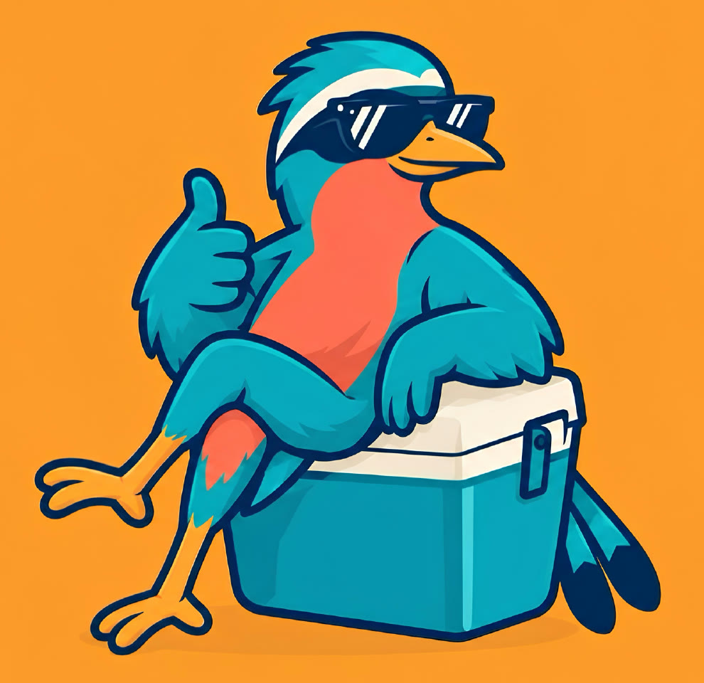
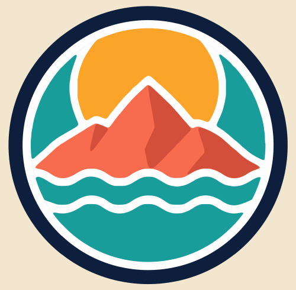
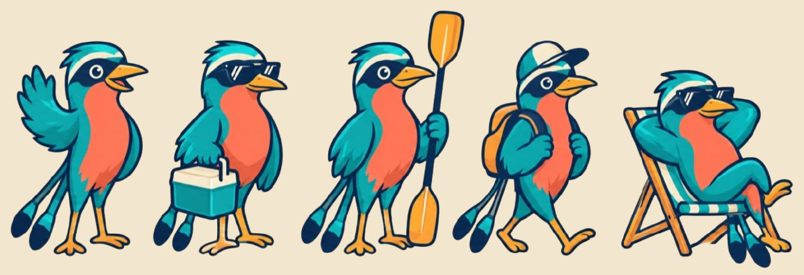

Una familia detrás de cada viaje.
Dushi es un proyecto familiar que queremos compartir con un montón de gente. Una tienda física y en línea con ropa y accesorios para disfrutar tus mejores momentos en la playa, la montaña y tus viajes.

adj. del papiamento, hablado en Aruba, Bonaire y Curazao
Un día, un feriado o un vuelo.
Cinco planes, una tienda.
Playa
Pacífico, arena y atardecer.Montaña
Volcán, bosque o cabaña.Feriado largo
Semana Santa, agosto o diciembre.En casa
Piscina o reunión con amigos.Viaje
Un vuelo fuera del país.Una vacación dentro de un círculo.
Sol
El plan del día, siempre arriba.
Volcán coral
Sombras suaves. Sin nieve y sin cráter humeante.

Dos olas
El Pacífico, siempre cerca.
Borde navy
Pensado como parche: bordado, etiqueta y pantalla.
Dushi el Torogoz.
Salvadoreño como el ave nacional y con nombre del papiamento: un mix que rompe esquemas.
Aunque la marca crezca a otros países, el Torogoz nos recuerda de dónde venimos. Va a la playa, explora, viaja y disfruta cada plan.

Llegas con todo resuelto.
Marcas seleccionadas
Escogemos cada marca para garantizar la calidad y la satisfacción de nuestros clientes.
Tienda física y en línea
Compra desde casa o pasa por Plaza Merliot, en Antiguo Cuscatlán.
Hablamos de tú
Como el amigo que ya armó el plan: cercano, alegre y sin complicaciones.